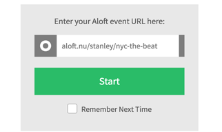
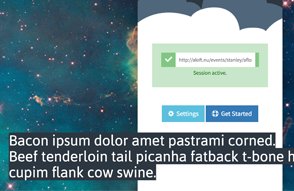
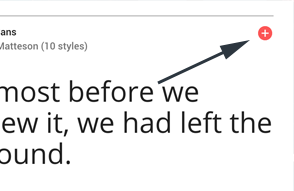
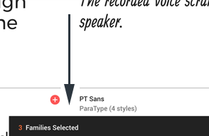
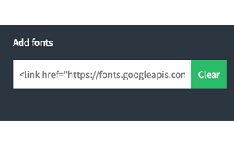

Afloat is a tool that allows a user to superimpose Aloft captions over most desktop applications. This is particularly useful during live presentations or settings where there is visual content alongside spoken content that is not captioned as the consumer is no longer forced look back and forth between the presentation and a separate display that is showing the captions.
REQUIREMENTS
In order to use Afloat, you will need a Windows, Mac, or Linux computer, a copy of Afloat, and an Internet connection.
STEPS
First, you will need an Aloft event ID given to you by your stenographer/captioner. This will be in the form aloft.nu/CAPTIONER/EVENT, where the name of your captioner and event name would appear in place of CAPTIONER and EVENT.
Next, paste the full address into the form field below "Enter your Aloft event URL here:" and press Start or hit the return key.

TIP: Check "Remember Next Time" to have the event URL you just entered be remembered the next time you run Afloat.
A window should pop up containing dummy text if the event is currently empty, or the live transcription being produced by your captioner.

Now just drag the caption window around to where you want the captions to be displayed. That's it!
Inside the settings panel, there are a number of options that you can control about the way Afloat looks and behaves.
By following these steps, you can add any font on the Google Fonts repository to use as your captioning font.
First, go to fonts.google.com to see a list of available fonts. When you see a font you like, click on the plus sign that appears at the top right-hand corner of the font.

At the bottom of the screen it should say "1 Family Selected," meaning that you've added it to your collection. You can repeat this process until you've added all the fonts you would like to use with Afloat. You can always add more fonts later.
Once you are done selecting fonts, click on the black bar that appears at the bottom that says "x Families Selected."

Now take the embed code that it gives you and paste it into the box where it says "Add Fonts."

Now press Save Settings or hit the return key and your fonts should now be available for use via the font style menu.